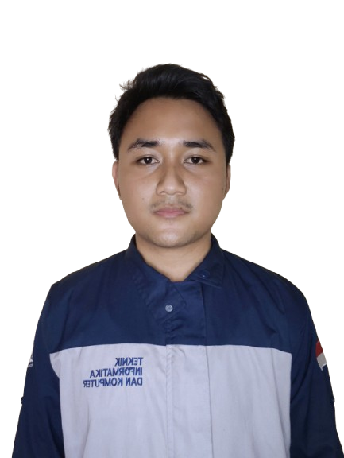
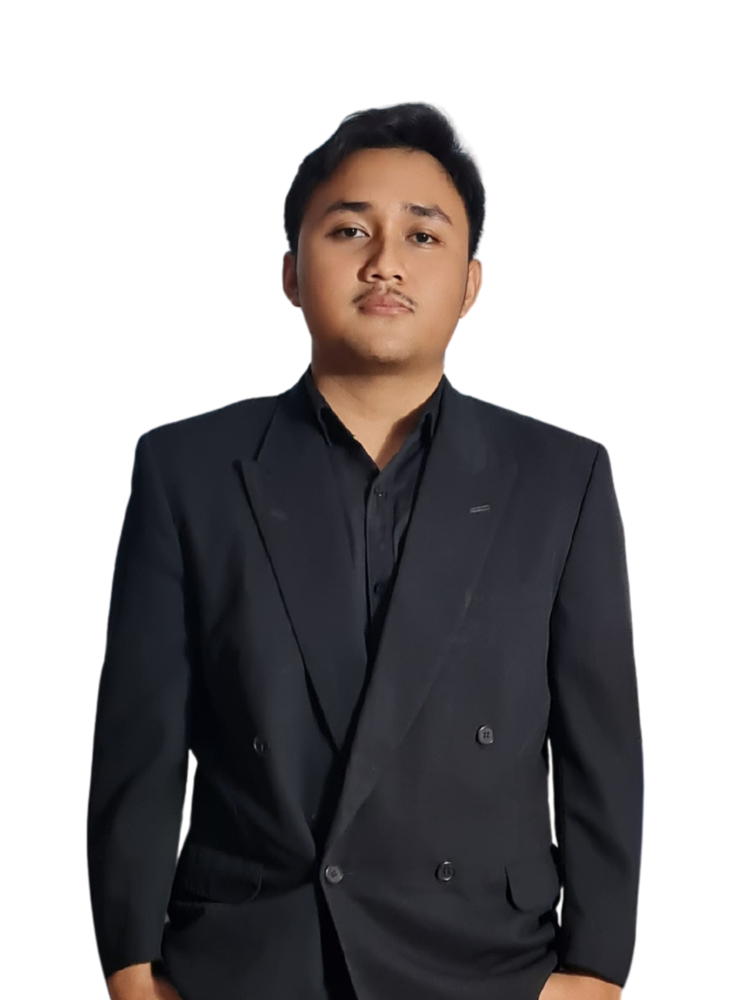

Our Members

"Bumi tidak memerlukan kita, tapi kita sangat memerlukan bumi. Mari jaga hutan untuk masa depan yang lebih baik."
Ahmad Zainul Mufid

"Ketika kita menanam sebatang pohon, kita tidak hanya menanam kehidupan, tetapi juga harapan untuk generasi mendatang."
Dimas Adlan Wiyanto

"Hutan adalah paru-paru bumi. Melestarikannya adalah tanggung jawab kita bersama untuk masa depan yang berkelanjutan."